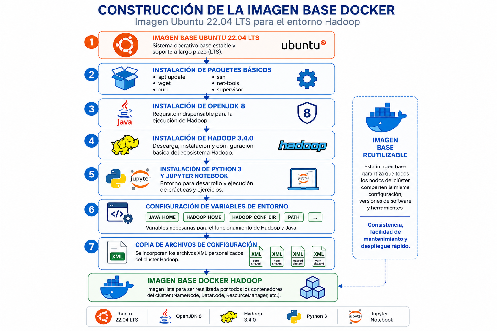

Capítulo 4. Arquitectura de Contenedores para el Despliegue del Entorno Big Data
Trabajo Fin de Grado - Arturo Cabello Rodríguez
Trabajo Fin de Grado - Arturo Cabello Rodríguez
La arquitectura desarrollada en este proyecto se fundamenta en una imagen base Docker común a todos los nodos del clúster Hadoop. Su objetivo es proporcionar un entorno homogéneo, reproducible y completamente preconfigurado sobre el que posteriormente se construyen los diferentes servicios especializados, como el NameNode, los DataNodes, el ResourceManager y los NodeManagers.
La imagen base proporciona el entorno común sobre el que se apoyan las imágenes específicas de los distintos nodos del clúster Hadoop. Incluye el software y las herramientas compartidas que necesitan los contenedores para funcionar de forma homogénea.
A partir de esta base se utilizan imágenes especializadas para los diferentes servicios de la infraestructura, como el NameNode, los DataNodes y los componentes de YARN. Cada una incorpora la función específica que desempeña el nodo dentro del clúster.
Entorno común y herramientas compartidas.
Gestión de los metadatos del sistema HDFS.
Almacenamiento distribuido y gestión de recursos y tareas.
Esquema conceptual de la relación entre la imagen base y las imágenes específicas de los nodos.
La imagen Docker parte de Ubuntu 22.04 LTS, seleccionado por su estabilidad, soporte a largo plazo y amplia compatibilidad con el ecosistema Big Data.

Figura. Imagen base Ubuntu 22.04 utilizada para construir todos los contenedores.
Para desplegar el entorno docente no es necesario construir manualmente la imagen base. Se utilizan las imágenes del proyecto y el archivo de configuración de Docker Compose, que define los servicios, sus relaciones, los puertos y la red de comunicación entre los contenedores.
Docker Compose permite iniciar conjuntamente los contenedores que forman el clúster. De esta manera, el estudiante puede centrarse en las prácticas de Hadoop, HDFS, YARN y MapReduce sin tener que instalar individualmente todos los componentes del entorno.
La utilización de una imagen Docker común constituye uno de los pilares de la arquitectura propuesta. Gracias a este enfoque, todos los nodos del clúster comparten la misma configuración, reduciendo considerablemente la complejidad del despliegue y facilitando la administración de la infraestructura Hadoop.
El código completo utilizado para construir esta imagen puede consultarse en el Anexo 7.1, correspondiente al Dockerfile base del proyecto.